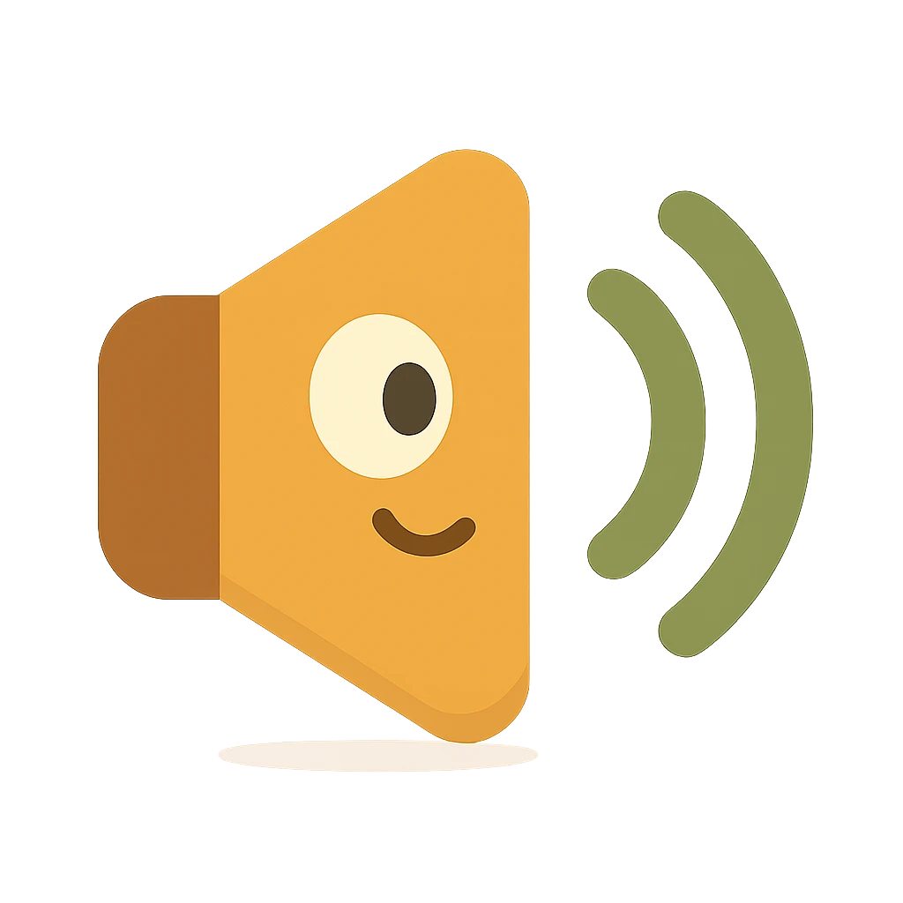

📖 Pickup UI/UX 標準
奶奶睡前英文童話 · v3.2 童話版
User directive 2026-06-10/11:「3 區塊 + 中文 + 視覺樣子 + 變動元素標明 + 7 題型 + 真實手機 + TOC + 不擋 + 禁 ✓」
📑 目錄 · 點即跳
規則: 每個畫面 lock 死 3-section 結構 三區塊垂直架構 :
頂 chrome 框架不滾 ·
中 content 主內容可滾 ·
底 nav / CTA 底部固定操作
⚙️ 紫 = 可變動 (user 可改 / 動態 derived)
📦 黃 = 頂部 chrome 框架
📜 綠 = 中段 scrollable 內容
⬛ 紅 = 底部 nav / CTA
📐 答題類 app 最佳設計比例參考
📱 螢幕長寬比 (aspect ratio) 9:19.5 = 對齊 iPhone 13+ 主力Apple Developer · iPhone screen sizes 2026
👆 觸控目標最小尺寸 44×44 pt · Material = 48×48 dp56 pt+ (細動作 fine motor 未成熟)Apple HIG Layout · Tactile Targets
📊 Duolingo / Memrise / Kahoot 結構比例 8-12% (progress + ✕ + audio)50-60% (sentence / options)15-20% (繼續 button + home bar)Quiz app teardown (Build Daily 2025)
👍 單手 thumb-zone (拇指可達區) Steven Hoober · Thumb-zone heatmap
👁 文字大小 (legibility) 17 pt · Duolingo Q prompt 22 pt20-24 pt (聽不清也看得清)Apple SF Pro · Duolingo design system
🎯 答題互動黃金 3 規則 Kahoot / Quizlet UX patterns
🌐 共用 design token 設計變數
cream bg 奶油底 #f1ebe1
warm sepia 暖咖文字 #3c2a1c
warm muted 次要灰咖 #7a6850
olive 成功 橄欖綠 #7d9a4f
terracotta 錯 陶土紅 #c84a3a
amber paw 琥珀色 #e7a44a
radius 圓角
lift height 抬起高度
press 動畫 按壓動畫
haptic 觸感震動
🗺️ Map 首頁地圖
🏳️ EN 👑 L1 🪙 0 🔥 0 🧊 2
CH 1
A Story in the Yard
院子裡的第一個故事
🐾 ⭐ 📒 🔥 🐱
頂 Chrome 框架 (~140px + 安全區)
HUD row 頂部資訊列 : 5 圖示橫排
🏳️ EN 語言選擇 (Profile 改)
👑 L1 progress 等級, XP 自動推
🪙 coins 金幣, 動態
🔥 streak 連勝, 每日
🧊 freezes 凍結卡, 任務獲得
Book cover 章節書封 :
章節隨 scroll 變
bg = meta.accent 各章不同色 + CH N + 英文標題 + 中文 italic
中 Spiral nodes scrollable 蜿蜒路徑可滾
頂端 grandma + shiba mascot 奶奶 + 柴犬 吉祥物 場景
蛇形 paw nodes 260 顆 (217 lesson + 43 chest)
章節數 chapter 動態
paw 圖示: 預設 amber, 完成 olive, 當前 加亮 #f5be6a
難度 / 完成狀態 derived
🎁 寶箱每 5 顆 lesson 插一個, 點開 +10 coins
底 BottomNav 底部導航 (fixed 60-70px)
5 tabs icon-only: 🐾 地圖 / ⭐ 任務 / 📒 圖鑑 / 🔥 成就 / 🐱 我的
active tab amber 框框: rgba(231,164,74,0.14) + border #d68a52
SquishButton press 按下變平面 · Container height 容器高度 預固定 280 nodes · IntersectionObserver 視窗偵測 抓章節 · 1-shot lessons load 一次載入 (B.297) · 寶箱 tap +10 coins · current node pulse 脈動高亮
🐱 Profile 我的
🏳️ EN 👑 L1 🪙 0 🔥 0 🧊 2
🐱 Cat Name: Mochi
🐕 Dog Name: Hana
🔇 Mute / 靜音 toggle
🎵 BGM peace.mp3 ▶
⚠️ Reset all progress · 重置進度
🐾 ⭐ 📒 🔥 🐱
頂 Hero 主視覺 (~200px)
Mochi avatar 120×120 圓 + 名字 22px + Level N 14px
catName (input)
Level XP 推
中 Settings 可滾
5-stat grid 5 個統計卡 3-col: XP / Coins / Streak / Visit / Freeze
Cat Name input 貓名輸入 + Save 按鈕
user 可改
Dog Name input 狗名輸入
user 可改
Audio settings 音訊設定 : Mute toggle
user 切換
Danger Zone: Reset all progress 重置進度 (紅按鈕)
底 BottomNav (跟 Map 同)
Mochi avatar 偶爾 blink 眨眼 · Save 按鈕 → AsyncStorage 儲存 + toast 短訊
⭐ Tasks 任務
🏳️ EN 👑 L1 🪙 0 🔥 0 🧊 2
📊 TODAY'S XP
0 / 30 XP · 完成 daily goal +20 XP
🎁 NEXT REWARD
+1 🧊 freeze
3-day streak 解鎖
📅 7-DAY HISTORY
日 一 二 三 四 五 六
🐾 ⭐ 📒 🔥 🐱
頂 Streak Hero (~200px)
🔥 56px + N day streak + label
streak 動態 derived
bg #ff7a3a 火橙, shadow #b34f1f
中 3 cards 可滾
🧊 Streak Freeze 凍結卡
freezes 動態
🐾 Visit Streak 連續打開 app
visitStreak 動態
📊 Today's XP progress 今日 XP 進度
xp 動態
底 BottomNav
Streak 升級 hero card scale bounce 縮放彈跳 1.3 → 1 · XP bar fill transition 填充動畫
📒 Cards 圖鑑
頂 Hero (~120px)
N/31 stories collected N/31 故事已收集
完成章節數 derived
中 Pokedex grid 圖鑑網格 4-col
31 cards 各帶 #N + 32px emoji + 中文標題 + 進度 %
章節 1-31 固定, 進度動態
Collected 已蒐集 = olive bg + olive border (禁 ✓ icon, B.264 rule)
Locked 未蒐集 : ${N}%
Tap → 跳 Map
底 BottomNav
Card complete unlock 完成解鎖 scale 0.82→1.12→1 pop · Hero N 變化 → 短 pulse
🔥 Alerts 成就
🏳️ EN 👑 L1 🪙 0 🔥 0 🧊 2
🔥 連勝 2 天 → 再 1 天解鎖 3-day Streak
🐾 ⭐ 📒 🔥 🐱
頂 Hero (~100px)
N/8 achievements unlocked N/8 成就已解鎖
解鎖數 derived
中 Badge grid 徽章網格 2-col
8 default badges 8 個徽章 : First Step / Streak 3-7-30 / XP 200-500 / Story One / Eight Tales
解鎖條件依 XP / streak / chapter 動態
Locked 未解鎖 = opacity 0.25 灰 + 灰標題
Unlocked 已解鎖 = olive border + olive bg
底 BottomNav
解鎖瞬間 confetti 彩帶 + Haptic Success + scale 0.7→1.15→1 · Tap unlocked badge 念 description
🪟 Modals 彈出視窗
KeySentencesSheet 重點句 / NextStoryPicker 下一則故事選擇器 / OnboardingPicker 新手引導 — 都遵守 TOP 標題 + MIDDLE scrollable + BOTTOM ✕ close / CTA.
Modal 額外: backdrop fade-in 背景淡入 240ms + slide-up 從下滑入 28px + 3 種關閉路徑 (點外圈 / ✕ / 再點觸發按鈕).
👵 ChapterIntro 章節開場 頂 Mascot Scene (~250px) : 奶奶 + 柴犬 illustration + 章節 floor band 章節地板色條 50px inset
中 Narration 旁白 +

SquishButton replay
重播 底 CTA : → Begin 開始 SquishButton olive
mascot-idle-bob 站立左右搖晃 動畫 · auto-speak narration on mount
📖 Lesson 答題畫面 — 按題型分
共同部分 (所有題型一樣):頂 ✕ 關閉 + olive progress bar + 🔇 mute (~50px sticky 固定不滾 )底 → 綠 CTA / 知道了 紅 CTA (~60px fixed footer 底部固定 )中 middle scrollable 中段可滾 的 renderer
① narration 旁白 劇情 STORY
🎙 Narrator
👵
Grandma · 奶奶
"Tonight I'll tell you a story about a stray cat who comes to my yard when it rains."
▸ 自動播放中…
🐱 🐕
糰糰 + 花花 趴著聽 (silent 聽眾)
中 Narration card 旁白卡
講者 avatar (奶奶 👵 / 糰糰 🐱 / 花花 🐕)
speaker 依 q.speaker 動態
講者名字 EN · 中文
EN narration sentence (一句長, italic)
Waveform 波形 動畫 = TTS 正在念
「自動播放中」微提示
on mount → speak(text, onEnd) 念完 callback · onEnd → setLessonIdx(+1) 自動推進 · 5s timer fallback 後備計時 (B.160) · BGM duck 0.7→0.3 降音 on speak / unduck on end · 無 user input 無互動
② listen-mc 聽選 4 選 1
🎙 Narrator
"She sleeps under the porch when the rain falls hard."
Where does the cat sleep on rainy nights?
under the porch 門廊下
up in a tree 樹上
on a warm bed 溫暖的床上
in the garden 花園裡
答對! +10 XP
"porch" = 門廊 · 貓躲雨的地方
中 Sentence + Q + 4 雙語選項
sentence card (auto-speak on mount + replay 可點)
Q prompt = story-anchored 扣劇情 不准用「Which word did you hear」(B.227 memory)4 option = 左 EN + 右中文 hint (bilingual, Duolingo style, B.229 memory)
每章 lessons-ch{N}.json 配置
選錯 1 次: yellow blindRetry (不揭答)
選錯 2 次: red banner + reveal + 知道了 CTA
auto-speak sentence on mount · tap option → Speech.speak(en) + Haptic Medium · 答對 → Confetti emoji burst + Haptic Success + CTA enable · 1st wrong yellow shake + retry 同題 · 2nd wrong red reveal + 知道了 (red CTA)
③ listen-tf 是非題
🎙 Narrator
"The dog Hana sleeps inside Grandma's house."
Is this true?
答對! +10 XP
花花 = 奶奶養的家犬, 住家裡; 糰糰 = 流浪貓, 跳牆來聽
中 Sentence + 2 huge True/False
sentence card (auto-speak)
Q prompt: "Is this true?" / 故事 anchored statement
2 巨型按鈕 50/50 split: True / 對 + False / 不對 (純文字, 無 ✓/✗ icon)
correctAnswer: 'true' | 'false' lesson 設
禁第三選項 ambiguous
auto-speak sentence · tap True/False → Haptic Medium · 答對 olive flash + Success Haptic + Confetti · 答錯 1st yellow shake + retry · 2nd reveal + 知道了
④ emoji-pick 看圖選
Which one is the peach ?
答對! +10 XP
Peach 桃子 — Ch2 桃太郎 從桃子裡蹦出來!
中 EN prompt + 2×2 emoji grid
EN prompt: "Which one is the X ?" 強調目標單字 ( 可點念)
4 emoji cell 大格 (2 列 × 2 行)
4 emoji + 1 correct lesson 設
tap emoji → 播放對應 EN word
選項層禁中文 (visual-only, B.245 EN-only rule)
tap emoji → Speech.speak("peach") + Haptic Medium · 答對 emoji bounce scale 1.2→1 + olive bg flash + Confetti · 答錯 yellow shake → 2nd reveal
⑤ tap-pairs 中英配對 互動 INPUT ⭐ user 問的
Match the pairs · 配對
EN 英文
peach
rain
porch
cat
1 / 4 paired
💡 tap 1 個英文 → 再 tap 對應中文 → 配成功 olive 變色
中 2 欄配對 = 4 英 + 4 中文
左欄 4 EN tile (順序 shuffle) + tap 念音右欄 4 中文 tile (順序獨立 shuffle)
8 個 tile 都 shuffle 動態
tap EN → 高亮 amber → tap ZH → 配成功 olive 變色 (或 wrong shake)
↑ 這是 user 「四個中文四個英文對照」的真正題型
底部「N / 4 paired」即時計數
已配對數 derived
tap EN tile → amber border + Speech.speak(en) + Haptic Medium · tap matching ZH → olive flash 雙方 + Haptic Success · mismatch → 紅 shake 0.3s 兩方 reset · 4/4 全配 → auto Confetti + CTA enable · 答錯 2 次配對 → 知道了 reveal
⑥ listen-comprehension 聽力理解
🎙 Grandma 奶奶
"Long ago, an old couple found a giant peach in the river. Inside the peach was a tiny boy. They named him Momotaro and raised him as their own." Replay
已用 1 次 重聽 (不限次)
Where did they find Momotaro?
inside a peach 桃子裡
in the river 河裡
in their house 家裡
on a mountain 山上
中 長 passage + Q + 4 雙語選項
Speaker badge 🎙 narrator/角色名
長 passage (3-5 句 narration) + Replay button (可重聽 N 次)
passage 長度依 lesson 設
Q prompt: who/where/why/what 比 simple listen-mc 更需理解
4 option 同 listen-mc 雙語
禁直接抄 passage 原句 (X3_R1_VERBATIM_WORDS lint)
passage auto-speak on mount (rate 0.75) · Replay tap → re-speak (Haptic Light) · 同 listen-mc 答對 / 1st 黃 / 2nd 紅 reveal 邏輯
⑦ sentence-builder 翻譯造句 互動 INPUT
把這句翻成英文 · 翻譯
「我今晚要說一個故事」
↑ 答案區 (tap 移回) · ↓ tile 庫 (tap 移上去)
I
a
tonight
will
story
tell
💡 預期答案 = "I will tell a story tonight"
中 ZH prompt + answer slot + EN tile bank
中文 prompt card (橘 cream bg) — 唯一在 surface 出現中文的題型 (其他題型答前禁中文 per B.243 memory)答案區 虛線框 (空 → 漸有 tile)tile bank 米咖色底 — 混序 EN words (含 distractor 多餘 tile)
tiles + 順序 lesson 設 + shuffle
tap bank tile → 移到答案區 (used 樣式 opacity 0.25)
tap 答案 tile → 移回 bank
CTA disabled 直到答案區 = 預期句長
tap tile → spring fly 至 slot (200ms) + Haptic Light · 答對 → Confetti + Success Haptic + Speech.speak(完整句) · 答錯 yellow shake retain user 排列 (parity tap-pairs blind retry) · 2nd 紅 reveal + 知道了
⚙️ Lesson 跨題型共同規則頂 Header 50px sticky : 所有題型一致 = ✕ + olive progress + 🔇 mute · progress 依 idx/total derived
底 CTA footer 60px fixed : 答對 → 綠 (#7d9a4f) → Continue · 答錯 2 次 → 紅 (#c84a3a) 知道了 reveal
所有題型共享:
auto-speak 自動發音 on Q mount + onUnmount cleanup 解除時清掉 ·
SquishButton 30ms 按下 + Haptic Medium ·
2-strike pattern 兩次錯誤揭曉 = 1st yellow blindRetry / 2nd red reveal + 知道了 ·
MapPage progress bar 推進 lesson idx 持久化 (localStorage) ·
mute toggle 影響所有 TTS (force:true option 仍 fire onEnd 不卡 advance) (B.251)
📌 規則總結 (違反 = revert)
3-section 強制 : top / middle / bottom 必須清楚分離頂 = chrome 框架 sticky fixed 不滾; 中 = scrollable 可滾 ; 底 = nav / CTA fixed所有按鈕一律 SquishButton (見 pickup-rn CONVENTIONS.md)不要對 fixed element 固定元素 加 CSS transition CSS 過渡 (iOS Safari jitter 抖動 )
chrome 顏色一律 cream #f1ebe1 跟 viewport bg 背景 一致
Haptic 觸感 Medium 配按下, Success 配答對
TTS 文字轉語音 auto-speak on Q mount + cleanup 清除 on unmount
MC Q prompt 必須 story-anchored 扣劇情 , 禁「Which word did you hear」(B.227); 選項雙語自說明
答錯 2-strike 兩次錯誤 : 1st 黃 blindRetry 不揭答重試 , 2nd 紅 reveal + 知道了
書封 dynamic chapter 動態章節 = IntersectionObserver 視窗偵測器 , 不用 scrollY listener 滾動事件監聽
⭐ 正確答案 = 綠色, 禁 ✓ 打勾 icon (B.264 user rule 2026-06-11)
option 答對只用 olive bg + olive border, 不在 label 加 ✓; reveal banner 也不用 ✓
📖 Pickup UI/UX Standard v3.2 童話版 · 2026-06-11 · 來源 docs/standards/ui-ux-standard-v1.md ⚙️ 紫色標 = 用戶可改 / 動態 derived · 改動 cadence: 任何 layout / 按鈕 / 特效 PR → 來這 spec 加 1 行對應✿ · ❀ · ✿ 每晚奶奶開書,糰糰跳牆 ✿ · ❀ · ✿